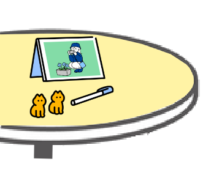

こすぎなぎの
ほーむぺーじ

ぷらいべーと
私のことが知りたかったらイラストをクリック！
出勤しよう
※次ページに移るよ
小杉凪（こすぎなぎ）
祖父が漁師だったので
海が穏やかに凪になるよう
名づけられたよ
2000年4月3日生まれ
千葉県出身
（チーバくんの足のほう）
血液型はA型
変なところで几帳面だよ

16personalities→指揮官
（ニジボックスにはあまりいない…？）
自分を動物に例えると
→コアラ
休みの日は12時間睡眠
するくらい寝るの大好き
インドア人間！
times_nagiを覗く
特技→楽器演奏
中学時代に吹奏楽部、大学時代に
軽音サークルに入ってたよ！
フルートとギターができるよ！
（今もできるかは怪しい）
最近アコースティックギターを買おうか検討中
趣味→マンガとゲーム
休みの日は一日中家でマンガを読んだり
ゲームをしているよ！引きこもりだね！
マンガは電子も紙も両方読むよ！
絵柄を見て紙で読みたいと感じるかが判断基準
ゲームは主にSwichとPCでやっているよ
times_nagiを覗く